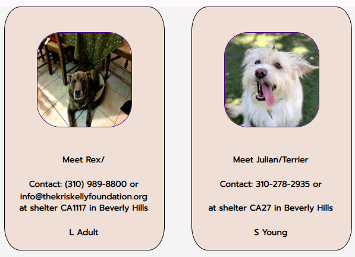
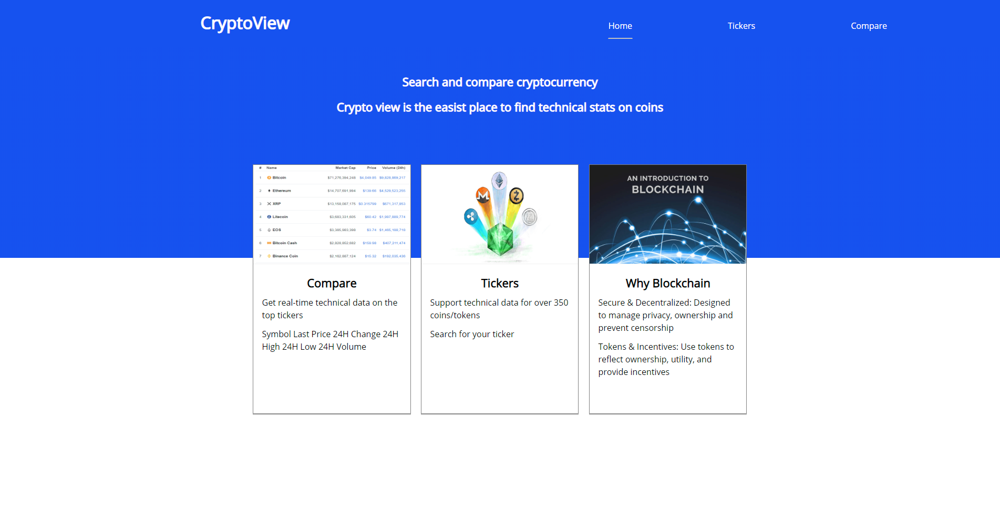

PetLovers(petfinder app)
85 million U.S families, own a pet. First hand i know most everyone loves pets and how useful an adoption app can be. My vision was creating an app to find a specific animal and or breed in your area. Then receive all the detailed info to be able to adopt that pet into your home. and to further the love of pets i decided to establish a simple api and database for events related to pets. So users can receive upcoming events related to pets like adoptions or fundraisers for a cause
GithubLive

Fortnite Society
Fortnite is by far the most popular video game in the world right now.The developer Epic Games are offering 100 million dollars in prize money for the eSports/competetive scene.With the game growing as fast as it is comes more than 40 million people logging in everyday to play fortnite.Fortnite will continue to grow for years to come so i created an app for this community where i provide a forums page and up a detailed up to data data grid on pro player settings.
Github
Live

CryptoEdge
Allows users to search two cryptocurrencies and get back realtime data and news, specifically price volume price change and low/high of day essentail technical prices. The news are articles from sourecs like cnn and users ccan see the source of the article and if they want to can click on the title to open a new window that will take them to that article or story.very simple app that returns realtime reliable technical data on a very big topic in todays society, Cryptocurrency
GithubLive